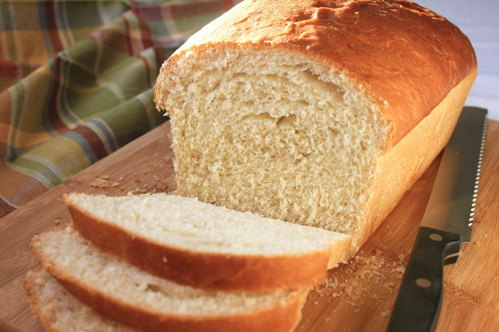

Amish White Bread

Description
A simple, easy, and nutritious loaf of white bread to add to your every day baking arsenal.
Ingredients
- 2 cups warm water (110 degrees F/45 degrees C)
- 2⁄3 cup white sugar
- 1 1⁄2 tablespoons active dry yeast
- 1⁄4 cup vegetable oil
- 1 1⁄2 teaspoons salt
- 6 cups bread flour
Steps
- Dissolve sugar in warm water in a large bowl, then stir in yeast. Allow to proof until yeast resembles a creamy foam, 5 to 10 minutes.
- Mix oil and salt into the yeast. Mix in flour one cup at a time. Knead dough on a lightly floured surface until smooth. Place in a well-oiled bowl, and turn dough to coat. Cover with a damp loth. Allow to rise until doubled in bulk, about 1 hour.
- Punch dough down. Knead for a few minutes, and divide in half. SHape into loaves, and place into two well-oiled 9x5-inch loaf pans. Allow to rise until dough has topped the pans by one inch, about 30 minutes.
- Meanwhile, preheat the oveh to 350 degrees F (175 degrees C).
- Bake the risen loaves in the preheated oven until golden brown for 30 minutes.